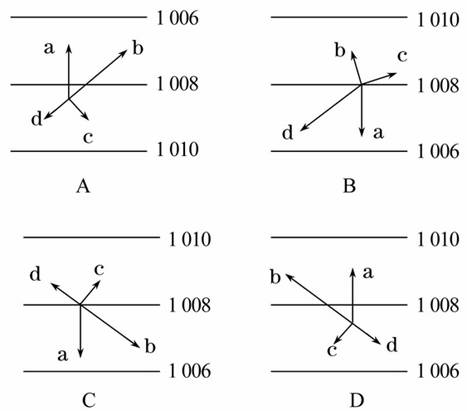
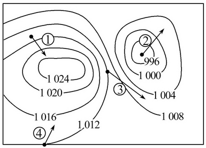
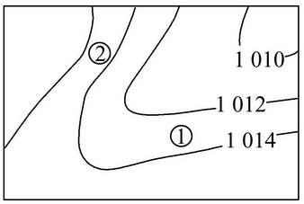
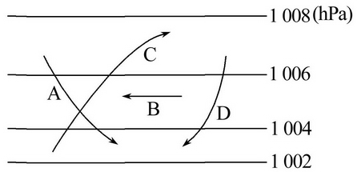
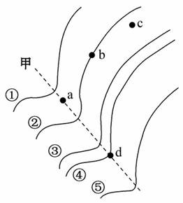
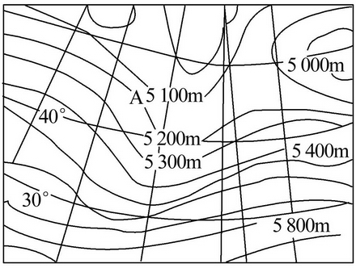
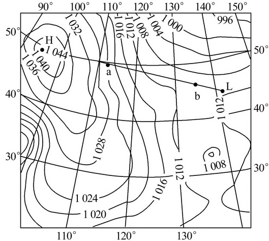

None - Fade - Slide - Convex - Concave - Zoom
选择班级
幻灯片样式
Black (default) -
White -
League -
Sky -
Beige -
Simple
Serif -
Blood -
Night -
Moon -
Solarized
1.下列有关风的叙述正确的是( )
A.大气的运动即是风
B.地面的冷热不均是形成风的直接原因
C.风是大气运动的一种最简单的形式
D.风向就是风吹来的方向
2．下列关于水平气压梯度力的叙述，正确的是( )
A．等压线越稀疏，水平气压梯度力越大
B．水平气压梯度力始终与等压线垂直并指向低压
C．水平气压梯度力始终与风向垂直
D．气压梯度力方向与风向相反
3.(2011·贵州高一检测)在水平气压梯度力、地转偏向力和地面摩擦力的作用下，风向应为( )
A.与等压线平行
B.垂直于等压线
C.与等压线斜交
D.无法确定
4.下列四幅气压分布图中(气压单位:百帕)，箭头分别表示：a 水平气压梯度力；b风向；c 地转偏向力；d 摩擦力。其中正确反映南半球状况的是( )
A.A
B.B
C.C
D.D
(2011·长沙高一检测)读北半球某区域等压线分布图，回答5、6题。
5.图中①、②、③、④四处的箭头中正确表示风向的是( )
A.①
B.②
C.③
D.④
6.图中①、②、③、④四处风力最大的是( )
A.①
B.②
C.③
D.④
7.下图是北半球某地近地面等压线分布示意图。读图完成下列问题。
(1)①处的风向不可能为( )
A.南风
B.西风
C.西南风
D.东北风
(2)①②处风速较大的是②
理由是等压线密集，水平气压梯度力大
读近地面的等压线图，回答1、2题。
1．图中正确指示北半球近地面风向的是( )
A.A
B.B
C.C
D.D
2．下列叙述正确的是( )
A．水平气压梯度力不影响风速
B．地转偏向力只改变风的速度
C．高空大气运动受摩擦力作用不明显
D．摩擦力只影响风速，不影响风向
读北半球某地等值线示意图，图中数值①＞②＞③＞④＞⑤。据此回答3～5题。
3.若该图为等压线示意图，则在a、b、c、d四点中风力最大的是( )
A. a
B. b
C. c
D. d
4.若该图为等压线示意图，b点的风向和甲处的气压场分别为( )
A.偏北风 高压
B.偏南风 高压
C.偏北风 低压
D.偏南风 低压
5.若该图为等风速线示意图，则图中a、b、c、d四点风速由大到小的排序为( )
A. a＞b＞c＞d
B. d＞c＞b＞a
C. d＞a＞b＞c
D. c＞b＞a＞d
下图是北半球500百帕等压面天气图。读图回答6、7题。
6.图中高空水平面上气压分布规律是( )
A.北高南低
B.南高北低
C.西高东低
D.东高西低
7.这种情况下决定风向的力应是( )
A.水平气压梯度力和摩擦力的平衡力
B.水平气压梯度力、地转偏向力和摩擦力的平衡力
C.水平气压梯度力和地转偏向力的平衡力
D.地转偏向力和摩擦力的平衡力
8.好莱坞影城在拍摄某影片时，一演员利用特种设备自高空缓缓降落，该演员感觉到的风的变化情况是(假设各高度水平气压梯度力相同)( )
A.风速变小，风向不变
B.风速变大，风向不变
C.风速变大，风向呈顺时针方向偏转
D.风速变小，风向呈逆时针方向偏转
9.(探究性学习)天气现象和气流运动状况对航空和航天会产生很大的影响。某部队欲从H地出发，乘直升机超低空飞行到L地执行某项任务，结合两地间的等压线图和拟定的路线图(如下图)，思考回答下列问题。(18分)
(1)若图示ab线为该部队往返路线，则前往L地
与返回H地两过程中哪个过程更节能？为什么？
前往L地时更节能。大体为顺风。] 
(2)飞机在前往目的地的过程中，所感受到的气流来自其
A.左后方
B.左前方
C.右后方
D.右前方
(3)飞机在往返的过程中，当飞行至a点和b点时，受风力影响较大的是a 点，为什么？
a点处等压线密集，b点处等压线稀疏。